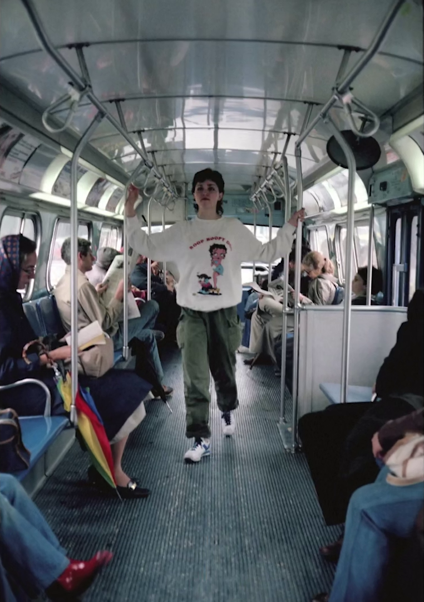
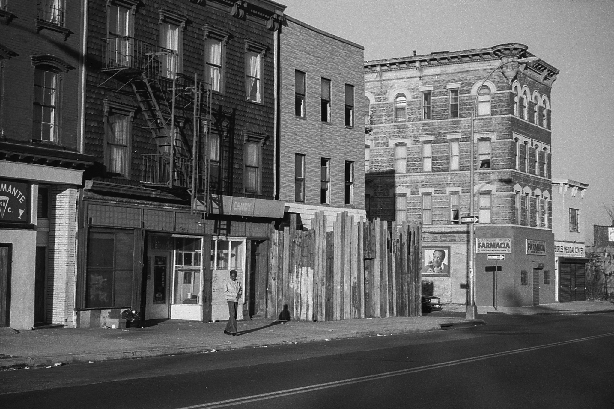
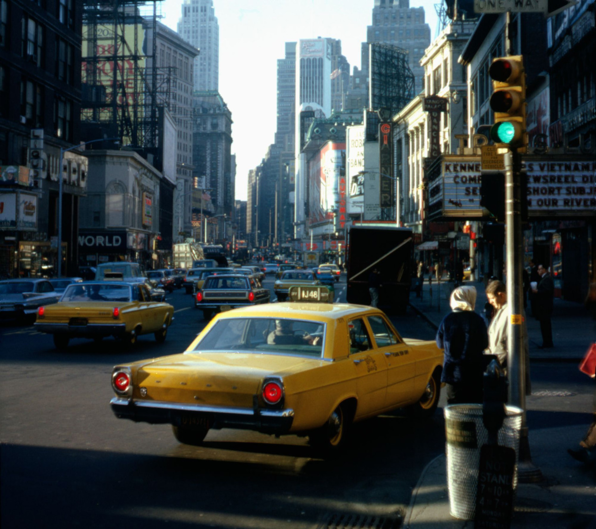

Wilt Chamberlain sweatin’ on 2nd Ave at 48th St, 1977
Wilt Chamberlain sweatin’ on 2nd Ave at 48th St, 1977
N Train, 1976

Cycle Sluts from Hell, 1988, 42nd Street

Whoopsie

View from the Empire State Building, 1985. Domed tennis courts on the lower right.
5th Ave and 52nd Street, 1975

The little-known but exciting Parade of Legless Dogs

The hair! 1978
42nd St crosstown, 1965
Voice of the ghetto

5 Train pulling into Union Square, 1970s

Someone’s sleeping on the couch tonight.

l-r Pharoah Sanders, John Coltrane, Alice Coltrane, Jimmy Garrison, and Rashied Ali - outside the Village Vanguard, New York, May 28, 1966.

Stuyvesant Street seen from Third Ave, 1980
Subway life, 1976
Early graffiti, 1973
Hall Place Records, East 7th St between 2nd and 3rd Ave, 1974

The Bowery near Bleecker St and Bond St, 1980

Roseland, West 52nd St, 1985
Screencap from “Coming to America”, 1988



Madonna photographed by her boyfriend Dan Gilroy on the bus in New York, 1979.

Myrtle Avenue, Five Hundred Block
It must be late in the afternoon as we look, once again, at the five hundred block of Myrtle Avenue, Brooklyn. This is between Pratt Institute and the Navy Yard.
One image by Richard Koenig; taken in the fall of 1981.


Keith Haring Don’t Believe The Hype mural P.S. 97, New York City, 1988.
New York in the 70s, I would give anything to be there right now

New York City, Jeffrey Ladd, 1995, Brooklyn Museum: Photography
© Jeffrey Ladd
Size: Sheet: 19 15/16 x 15 7/8 in. (50.6 x 40.3 cm) Image: 15 7/8 x 10 11/16 in. (40.3 x 27.1 cm)
Medium: Gelatin silver photographhttps://www.brooklynmuseum.org/opencollection/objects/164609

Hearn’s Flowers, Bronx, 1970s
Early graffiti on the 3rd Ave El, early 1970s

Third Avenue El in the Bronx, 1970s
Bus at Fordham Road and Valentine Ave in the Bronx, 1974

Stillwell Avenue, Coney Island, Brooklyn, 1985
By the Plaza Hotel, 1979

New York City - 1965
Source: Hemmings Daily

Columbus and 83rd, 1983
The Zodiac below, Richard Chun Karate above, 1971
Reading “Horton Hears a Who” at the Coney Island Public Library, 1956
Reading in Bryant Park, 1977
Getting smarter at Barnard College, 1961
Commuting, 1981

Outside the NY Public Library, 1979

Makeshift reading bench, outside Parsons, 1979

Catching some rays, and some diseases, probably. Brighton Beach, Brooklyn, 1979
Gene Hackman taking a turn behind the camera during the filming of The French Connection, 1971

Cyndi Lauper on 59th and First, by the Queensboro Bridge, 1983
Papaya King, East 86th Street, 1986

Waiting for the parade, 1974
Union Square, 1982
Cross Bay Blvd outside Rockaway Blvd Station, 1982